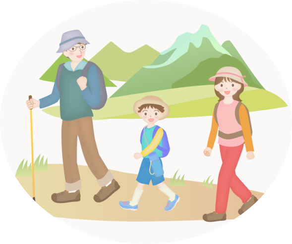

家族で スポーツを楽しもう

スポーツを楽しもう。家族で。
家族で一緒に身体を動かしませんか？
一緒にスポーツする事で得られるメリットが沢山あります。
1. 親子共通の話題が出来る
共通の話題ができ、無理に話題を探さなくても自然と話が弾むようになる
2. 子供の事を知れる
親子で一緒にスポーツをすると、これまで気づかなかったわが子の個性が見られることも
3. 健康的な生活ができる
日々の習慣に親子でスポーツを取り入れると、規則正しい生活ができておすすめ
4. 新しい自分に気づける
子供に負けたくないとがんばってみたり、苦手だったスポーツも親子でやると楽しいと気づけたり、自分自身の新しい一面を知ることも